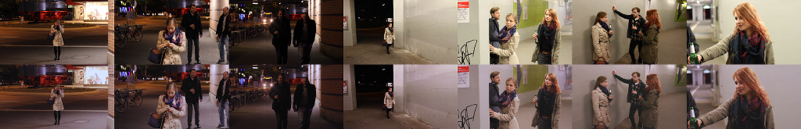

Gefahrengebiete[1]Eine Anspielung auf die Hamburger Gefahrengebiete von Januar 2014. ist ein 12-Minuten-Kurzfilm, der im Sommersemester 2014 im Modul Camera Acting des Studienganges Bachelor Media Systems (B-MS) entstanden ist. Die Planung für das Projekt begann im Wintersemester 2013/14 im Kurs Künstlerische Gestaltung 2.
Geplant, geschrieben, gedreht, nachbearbeitet und am 05.07.2014, begleitet mit einer Ausstellung, aufgeführt wurde der Film von etwa 40 bis 50 Media Systems Studierenden, betreut von sieben Dozenten und Tutoren. Vier Schauspieler wurden unentgeltlich gecastet. Darüberhinaus gab es für die Herstellung der Kostüme eine Kooperation mit dem Studiengang Mode-/Kostüm-/Textildesign des Department Design.
Produktionsleitung: Christoph Mennerich
Drehbuch: Tanja Blücher und Janina Kozubik
Regie: Nico Rößel und Simon Pontius
Hauptrollen: Arikia Orban, Hannah Goossens, Martin Geisen und Aramis Scherer
Ich hatte die Leitung über das Team Postproduktion Bild, bestehend aus drei Personen (mit mir). In dieser Funktion habe ich mit der Regie und der Postproduktion Ton kommuniziert; für mein Team Übungen zur Vorbereitung erstellt; die Szenen 1 und 2 (von 5) geschnitten, nachbearbeitet und mit dem Ton synchronisiert; die Titelsequenz und den Abspann generiert; sowie den Film als ganzes finalisiert.
Eine Online-Veröffentlichung des Filmes ist derzeit nicht möglich, weil dafür die erforderliche Musik-Nutzungslizenz fehlt. Authentifizierte Besucher dieser Webseite können sich den Film in geringer Auflösung (H.264, 480x270 Pixel, 25 FPS, 48 kHz Ton) als MP4-Datei (234 MiB) herunterladen.
| Technologien | H.264, 1080p, Farbkorrektur |
|---|---|
| Tools | Blender, Avidemux, VirtualDub, Audacity, Auphonic, GIMP, Trello |
| Beteiligte | 3 (50+ gesamt) |

{kind=link}
{kind=link}